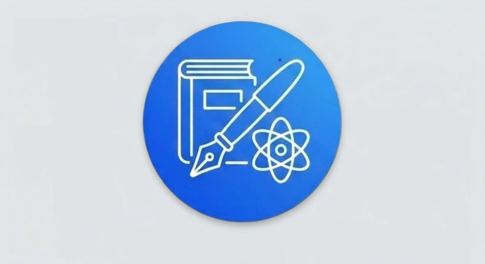

Знайдіть свого репетитора
Викладачі з математики онлайн та у вашому місті

Олена
🖋️ Математика
Маю великий досвід, високі результати, учні вдало здають НМТ. Навчилася працювати з дітьми молодших класів. Дівчинку з Канади готую до вступу в університет. Аліса з Іспанії пройшла за 1 рік програму 8,9 класу. Маю розвиваючі програми для малюків. Є нагорода - орден. Можу надихати , заохочувати вчитись.
🏆 25 років досвіду
📚 Формат занять: 💻 Онлайн
💰 400 грн — 60 хв
📍 Одеса
📞 ПодзвонитиФедір
🖋️ Математика, фізика та астрономія
Пропоную індивідуальні заняття з фізики, математики та астрономії для учнів від 7 класу, старшокласників, студентів і дорослих, зокрема для тих, хто планує навчання за кордоном або навчається в міжнародній школі. Маю магістратуру з астрофізики з відзнакою, університет імені Івана Франка у Львові, та майже 12 років досвіду репетиторства з різними навчальними програмами. Працюю з підготовкою до НМТ і міжнародних тестів, допомагаю з курсовими та професійними розрахунками. Заняття онлайн, індивідуально, тривалість 1 година, платформи Google Meet, Telegram або WhatsApp, основна робота на iDroo. Перше заняття це безкоштовна консультація тривалістю в межах години. Домашні завдання є обов’язковими, я слідкую за прогресом і інформую батьків за потреби.
🏆 12 років досвіду
📚 Формат занять: 💻 Онлайн, індивідуально
💰 700 грн — 1 година
📍 Київ
📞 ПодзвонитиАлла
🖋️ Математика
Працюю з учнями 6-9 класів. Для учнів 10-11 класів пропоную підготовку до НМТ за авторськими розробками. Офлайн Лісовий масив( Київ) або онлайн.
🏆 10 років досвіду
📚 Формат занять: 💻 Онлайн та офлайн
💰 450 грн за 60 хв (6–9 класи); 500 грн за 60 хв (10–11 класи, підготовка до НМТ)
📍 Київ
📞 ПодзвонитиОлена
🖋️ Математика
Пропоную послуги репетитора математики для учнів 4-11 класів, НМТ.
🏆 15 років досвіду
📚 Формат занять: 💻 Онлайн
💰 Від 400 грн / 45 хв
📍 Полтавська область
📞 ПодзвонитиДенис
🖋️ Математика
Підготовка до НМТ, ДПА з алгебри та геометрії. Вища математика для студентів. Проходження незнайомих тем, практика розв'язання задач по всім темам, тренування складання екзамену. Також допомагаю: у роз'ясненні окремих завдань з алгебри, геометрії, вищої математики.
🏆 12 років досвіду
📚 Формат занять: 💻 Онлайн
💰 400 грн
📍 Запоріжжя
📞 ПодзвонитиРепетитори з математики онлайн для жителів Запоріжжя
У каталозі зібрані анкети викладачів математики для школярів і дорослих: від допомоги з шкільною програмою до підготовки до НМТ.
Кому допоможе репетитор з математики
- Школярам 1-11 класів: домашні завдання, контрольні, підтягування оцінок.
- Абітурієнтам: підготовка до НМТ з математики.
- Тим, хто хоче закрити прогалини в алгебрі чи геометрії.
Онлайн чи офлайн
Онлайн-формат дає змогу обрати викладача незалежно від району чи міста. Формат занять кожного фахівця вказано в його картці.
Як обрати репетитора з математики
Визначте мету: оцінки, іспит чи системне навчання. Прочитайте опис і досвід у картці, домовтеся про пробне заняття, щоб оцінити методику й комфорт у спілкуванні, та заздалегідь узгодьте вартість, тривалість і графік.
Скільки коштують заняття з математики
Вартість залежить від досвіду викладача, тривалості уроку та мети занять. Її вказують самі репетитори в анкетах, тож порівняйте кілька пропозицій і уточніть умови безпосередньо в обраного фахівця. Станом на 2026 рік середня ціна за 60 хвилин онлайн-заняття з математики в Україні становить приблизно 400–700 грн.